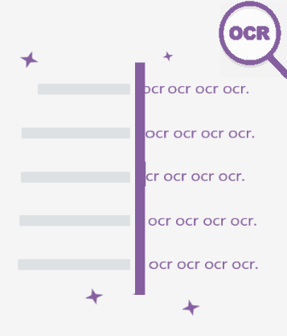

<ion-header class="ion-no-border">
  <ion-toolbar color="primary">
    <ion-title style="color: black;text-align: center;">Scanner</ion-title>
  </ion-toolbar>
</ion-header>

<ion-content>

  <ion-card color="primary" style="height: 97%;overflow: scroll;">
    <ion-grid>  
      <ion-row style="height:15%;margin-left: 8%;margin-right: 8%;">
        <ion-col>
          
        </ion-col>
      </ion-row>
      <ion-row  style="height:15%;">
        <ion-col >
          <div class="scanner">
            <h2 >Scanner mes pieces justificatives  </h2>
          
          </div>
        </ion-col>
        
      </ion-row>
      <ion-row  style="height:15%;">
        <ion-col >
          <h5 style="text-align: center;" id="listDocuments">
            <ul style="width: 50%;position: relative;left: 35%;">
              <li style="text-align: left;">CNIE</li>
            </ul>
          </h5>
          
        </ion-col>
        
      </ion-row>
      </ion-grid>
    </ion-card>
      
  <ion-fab vertical="bottom" horizontal="center" slot="fixed" style="position: fixed;bottom: 5%;">
    <ion-fab-button color="secondary" routerLink="/ocrop">
      <div >
       <ion-label>Scanner</ion-label>
      
      </div>
    </ion-fab-button>
  </ion-fab>
</ion-content>
